専門学校 九州デザイナー学院、メイクアップアーティスト学科卒業。ウエディング会社『レイジーシンデレラ』勤務。2005年沖縄移住、『発毛専門リーブ21』勤務。ヘアメイク・スタイリスト事務所『Color's』勤務。
2011年 同事務所にて、スタイリストとして活躍していた新谷と『Team ajico』として、タッグを組む。現在は 沖縄県内外のテレビ番組、ドラマ、CM、PV、スチール、ウエディング等のヘアメイクとして活動中。
PROFILEメンバー
田代 千恵HAIR MAKE — tashiro chie
HISTORY
WORKS
テレビ番組
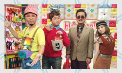
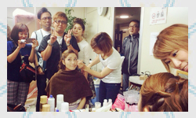
- 沖縄テレビ放送『Hi-pu-☆Hop』
(土曜日 午後6:00～6:55生放送)
MC ひーぷーさん・こきざみインディアンさん
ひーぷーガール ヘアメイク担当 - 沖縄テレビ放送『パブピポ』
（毎週土曜日 午後6:55～生放送）
Ｐガール ヘアメイク担当 - 『Going! Sports & News』(日本テレビ)
亀梨×大谷選手 対談ロケ
亀梨さん ヘアメイク担当 2017年 - 『人生が二度あれば』(日本テレビ)
橋下徹さん ヘアメイク担当 2017年 - 『紺野、今から踊るってよ 鷲見もグルメ吟じまくりSP2016』(テレビ東京)
沖縄ロケ ヘアメイク担当 - 『ダレトク キモうまグルメ』 沖縄ロケ
滝川カレンさん・アンジャッシュ児島さん
ヘアメイク担当 2016年 - 『趣味バカ』(サンテレビ)
沖縄ロケ ヘアメイク担当 2016年 - 沖縄テレビ放送『お笑い高校総体』
MC・審査員 ヘアメイク担当 2014年・2015年 - BS日テレ アンパンマンクラブ
沖縄ロケ お姉さん ヘアメイク担当 2013年・2014年 - 琉球放送『ゴリmeets世界のウチナナーンチュ』
MC・ゲスト ヘアメイク担当 2015年 - 琉球放送
『夏休みクイズバラエティー オキペディア』
MC・解答者 ヘアメイク担当 2014年・2015年 - テレビ東京『紺野、日本の絶景で踊るってよ』
沖縄ロケ 紺野あさ美さん ヘアメイク担当 2015年
映画・ドラマ
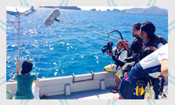
- 短編映画 名嘉真崇介監督『港川人の友達』 2016年公開
- 琉球放送 『オキナワノコワイハナシ』
川端匠志 監督 『水屑』 2015年 - 琉球放送 『オキナワノコワイハナシ』
後藤聡 監督『カタブイ』 2015年 - 短編映画 岸本司 監督
『こころ、おどる ～kerama bule～』 2015年公開 - 短編映画 岸本司監督
『スイーツライフ』 2015年公開 - 短編映画 ゴリ監督『ロクな人生』 2014年公開
- マレーシアTVドラマ『Cinta Di Okinawa』 2014年
- 琉球放送 ドラマ『港FE 序章』 2013年
TV-CM・PV・スチール撮影
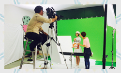
- エッカ石油 TV-CM『T-MEN』編 2017年
- 上間菓子 スッパイマンTV−CM
『芸人全員』編
『工場見学』編
『WHO'sスッパイマン』編
『走れメロス』編
『一本取られたわ』編
『スポーツクラブで〜』編
『普天間純子イラッと〜』編 2017年 - 『T×T GARAGE』
日本ハムファイターズ 中田選手・杉谷選手
ヘアメイク担当 2016年・2017年 - S&B食品 ハーブCM 沖縄撮影 ヘアメイク担当 2017年
- E3E10ガソリン
ひーぷーさん・宮城まり子さん ヘアメイク担当 2017年 - AKB48 松井玲奈さん ファンクラブ沖縄イベント
ヘアメイク担当 2017年 - デパートリウボウ TV-CM『紳士服売り場』編 2016年
- ヤマハ発動機 『ボルト』VP スチール
延時成実さん ヘアメイク担当 2016年 - 沖縄県 人権啓発ポスター
ひーぷーさん ヘアメイク 2016年 - イオン北海道 TV-CM『KISS』編 2016年
- 佐賀観光PV
『抱く県、佐賀 SAGA MONOGATARI』 2016年 - ミス沖縄2016 スチール撮影
ヘアメイク担当 2016年 - NEXT WEEK END 春夏号『週末野心』沖縄撮影分
ヘアメイク担当 2016年 - 『週iwell』アクセサリーカタログ ヘアメイク 2015年
- Maxplus TV-CM『ギャリー』編 2015年
- 明治 ヨーグレット・ハイレモン
『ポリポリダンス』篇 2015年 - サザンビーチホテル TV-CM 2015年
- イオン琉球TV-CM
ひーぷーさん出演『火・水ぴか市』 2014年 - 名護市観光 PV撮影 2014年
- ミニストップ TV-CM
『ハロハロクリームソーダ』篇 2014年 - りゅうぎんDCカード TV-CM
『こころをこめたいちまい』篇 2014年 - りゅうぎんDCカード TV-CM 2013年
- りゅうぎんDCカード TV-CM 2012年
- E3・E10ガソリン スチール撮影
（ひーぷーさん・宮城麻里子さん） 2013年・2014年 - 沖縄銀行 ピプカカード TV-CM
（ミキトニーさん出演） - TOYOTA カローラ TV-CM（玉城美香さん 他 出演）
- SUZUKI 『ワゴンR』編（ハンサムさん 他 出演）
- ホテル日航グランドキャッスル PV
- OLYMPUS デジタルカメラ PV
（浅田真央さん・浅田舞さん出演）
アーティスト
- 今井絵理子『なんくるないさ～』MV
- TEE『三度の飯より君が好き』MV
- 島袋寛子 沖縄イベント ヘアメイク
- 今井絵理子 沖縄イベント ヘアメイク
その他
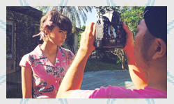
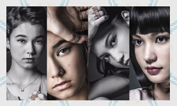
- ミス沖縄 メイクレッスン 2015年・2016年
- ブライダル ヘアメイク
新谷 麻実STYLIST — shinya asami
HISTORY
大学在学中にデザイン学校「メルダス研究所」でデザインを学ぶ。卒業後、アパレル会社「P・G・M」に勤務。
その後、スタイリスト事務所「FORTEEN」に所属。2006年には活動拠点を沖縄に移し、ヘアーメイク・スタイリスト事務所「Color’s」に所属。2011年、独立、ヘアーメイク・スタイリストチーム「Team ajico」設立。現在は、沖縄にて県内外のテレビ番組、ドラマ、CM、PV、スチールなどのスタイリスト担当。
WORKS
テレビ番組
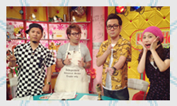
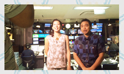
- 沖縄テレビ放送『Hi-pu-☆Hop』
(土曜日 午後6:00～6:55生放送)
MC ひーぷーさん・こきざみインディアンさん
ひーぷーガール 衣裳担当 - 琉球朝日放送『スパイス』
(土曜日 午前9:30～生放送）
MC デビッド・シェーンさん・長嶺花菜さん 衣裳担当 - 琉球朝日放送『News Q＋』
(月曜日～金曜日 夕方6:30～生放送)
女性キャスター 衣裳担当 - 琉球朝日放送『ウェザーQ＋』
(月曜日～金曜日 夕方6:25～生放送）
気象予報士 衣裳担当 - 琉球朝日放送 『旬感Qアプリ』
(月曜日～金曜日 午後4:35～4:50生放送）
女性キャスター 衣裳担当 - 琉球朝日放送『お笑いバイアスロン』
MC２名 衣裳担当 2013年・2014年・2015年 - 沖縄テレビ放送『お笑い高校総体』
MC 衣裳担当 2014年・2015年 - 沖縄テレビ放送『X FACTOR OKINAWA JAPAN』
甘露時絢子・伊舎堂さくら 衣裳担当 2013～2014年
映画・ドラマ
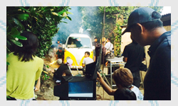
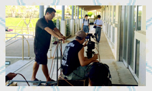
- 琉球放送『オキナワノコワイハナシ』
名嘉真崇介 監督『方言札』 2016年 - 琉球朝日放送『沖縄・ベトナム合作ドラマ ” 遠く離れた同じ空の下で ”』 2016年
- 琉球放送 『オキナワノコワイハナシ』
川端匠志 監督 『水屑』 2015年 - 琉球放送 『オキナワノコワイハナシ』
後藤聡 監督『カタブイ』 2015年 - 琉球放送 『オキナワノコワイハナシ』
後藤聡 監督『オナリ』 2014年 - 短編映画 岸本司 監督
『こころ、おどる ～kerama bule～』 2015年公開 - 沖縄テレビ 開局55周年記念ドラマ
『HEART BEAT ”~ここに君がいる~”』 2014年 - 琉球放送 琉神マブヤ－5 2015年
- 琉球放送 琉神マブヤー4 2014年
- 琉球放送 琉神マブヤー3 2013年
- 琉球放送 琉神マブヤー1972 レジェンド 2012年
- 琉球放送 ドラマ『FE 序章』 2013年
TV-CM・PV・スチール撮影
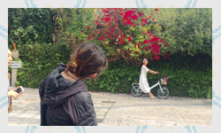
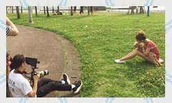
- Y!mobile沖縄 TV-CM
慶田リナ出演『考えるキジムナー』編 2017年 - Y!mobile沖縄 TV-CM
崎原カリサ出演『屋宜さん一家』編 2016年 - Y!mobile沖縄 TV-CM
崎原カリサ出演『乗り換えヨット登場』編 2016年 - Y!mobile沖縄 TV-CM
崎原カリサ出演『オキナワYell』編 2016年 - Y!mobile沖縄 TV-CM
崎原カリサ出演『うたのリレー』編 2016年 - Y!mobile沖縄 TV-CM
崎原カリサ出演『スイングガール』編 2015年 - Y!mobile沖縄 TV-CM
崎原カリサ出演『恋のルンルンバルーン』編 2015年 - コンベンションビュロー『くがに時間』PV 2017年
- 上間菓子 スッパイマンTV−CM
『芸人全員』編
『工場見学』編
『WHO'sスッパイマン』編
『走れメロス』編
『一本取られたわ』編
『スポーツクラブで〜』編
『普天間純子イラッと〜』編 2017年 - エッカ石油 TV-CM『T-MEN』編 2017年
- TULIP TV-CM『ポークランチョンミート』編 2017年
- 沖縄電力 TV-CM『しあわせ守るあかり』編 2016年
- アイホーム TV-CM
『父親』編
『パーティー(母親)』編
『パーティー(娘)』編 2016年 - デパートリウボウ TV-CM『紳士服売り場』編 2016年
- 大和ハウス
『PREMIST GINOWANマンション』PV 2016年 - TOSHIBA PV 2016年
- 『method』ランドリーリキッド イメージ撮影 2016年
- イオン北海道 TV-CM『KISS』編 2016年
- 『i well』アクセサリーカタログ 撮影 2015年
- maxplus TV-CM『ギャリー』編 2015年
- サザンビーチホテル TVーCM 2015年
- 沖縄森永乳業カフェ TV-CM
『その甘さが好きだー!』編 2015年 - 沖縄森永乳業ヨーゴ TV-CM
『みんなの乳酸菌』編 2015年 - イオン琉球 TV-CM
ひーぷーさん出演『火・水ぴか市』 2014年 - 名護市 PV映像撮影 2014年
- りゅうぎんDCカード TV-CM
『ココロをこめたいちまい』編 2014年 - りゅうぎんDCカード TV-CM 2013年
- りゅうぎんDCカード TV-CM 2011年
- (株)サンウッドピーピー 太陽光・水素水 TV-CM 2013年
- (株)サンウッドピーピー 太陽光・水素水 TV-CM 2012年
- 沖縄銀行 ピプカカード TV-CM
(ミキトニーさん出演） - TOYOTA カローラ TV-CM (玉城美香さん 他 出演)
- SUZUKI ワゴンR編 TV-CM (ハンサムさん出演)
- ホテル日航グランドキャスル PV
- OLMPUS デジタルカメラ PV
(浅田真央さん・浅田舞さん出演) - 宮古島アラマンダホテル TV-CM
- NTT西日本 TV-CM